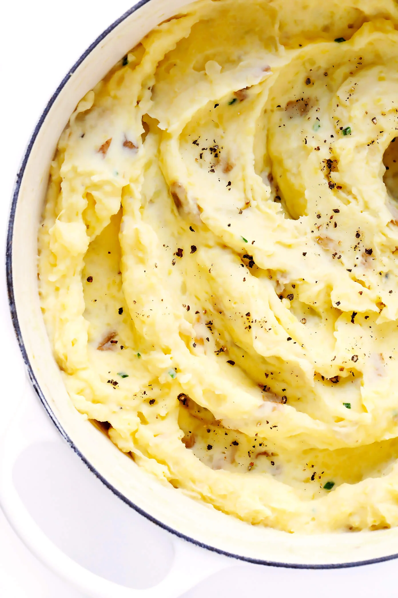

The Best Mashed Potatoes EVER!

Description
I'm not kidding when I say these will be the best mashed potatoes you'll ever have. If you don't think so, then you
probably didn't follow the recipe correctly. But if you're certain that my recipe is the problem, and not your terrible
culinary "skills", then please send all complaints to 605-475-6959.
Ingredients
- 1 pound Yukon Gold potatoes
- 1 pount Russet potatoes
- 1 tsp garlic powder (or more, probably a lot more)
- 2 tbsp butter
- 1/2 cup light cream or half n half
- 2 ounces cream cheese
- salt and white pepper to taste
Directions
- Peel the potatoes or the leave skin on. Cut the potatoes into quarters and boil them until soft (10-12 min
or feel with a fork)
- While the potatoes are boiling, pour the cream into a saucepan and melt the butter into it over
low-medium heat. Alternatively put the butter and cream in a cup and microwave 30 seconds at a time until the
butter is melted.
- Once the potatoes are done cooking, turn off the heat and drain the water. Put the potatoes in a colliander
or leave them out on a cutting board or similar to dry.
- While the potatoes are drying, cut the cream cheese into small squares if needed.
- Use a potato masher to mash the potatoes into a bowl.
- Toss the cream cheese into the bowl with the mashed potatoes. Pour half of the melted butter and cream mixture
into the bowl and fold the potatoes with a wooden spoon or spatula. Continue folding while pouring the remaining
butter and cream mixture in small increments.
- Season with salt and white pepper to taste. Throw in extra garlic powder until desired garlicky-ness.